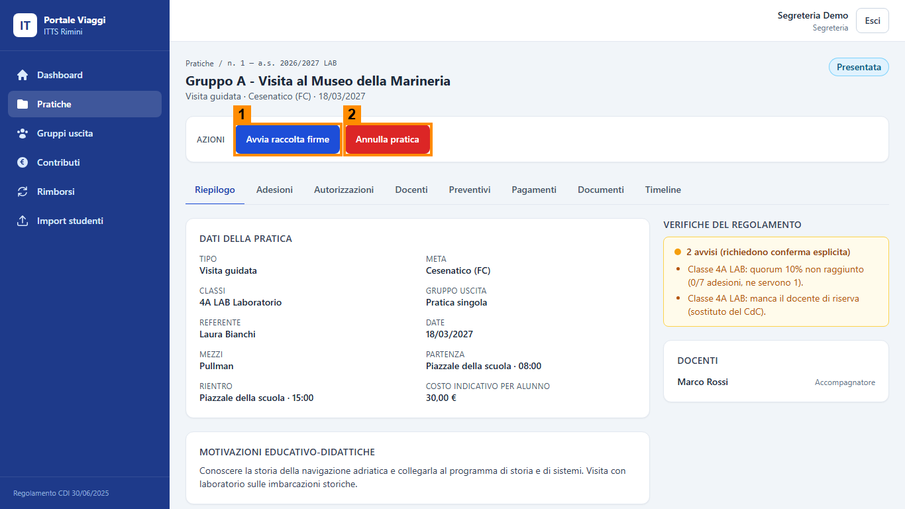
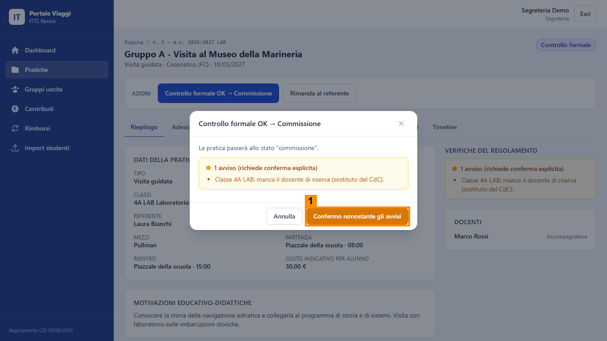

Scheda del ruolo: Segreteria
Obiettivo
Far partire la raccolta delle firme e fare il controllo formale della pratica prima che passi alla Commissione.
Cosa fare, passo per passo
- Dalla dashboard trovi la pratica presentata tra quelle in attesa di una tua azione. Aprila: ricordati di aprire solo quella del tuo gruppo (il titolo inizia con «Gruppo A - » o «Gruppo B - »).
- Nella barra Azioni premi Avvia raccolta firme (1 nell'immagine). Il portale crea una riga di adesione per ogni studente e manda l'email ai genitori. Accanto c'è Annulla pratica in rosso (2): non serve, non premerlo.
- Aspetta che lo studente e il genitore del tuo gruppo abbiano risposto. Puoi guardare le schede Adesioni e Autorizzazioni nella pratica.
- Premi Chiudi raccolta e passa al controllo formale. Da qui il quorum delle adesioni è vincolante.
- Nel controllo formale leggi gli avvisi: resta quello sul docente di riserva. Conferma con Confermo nonostante gli avvisi, poi premi Controllo formale OK → Commissione.
- Se qualcosa non va, Rimanda al referente con una motivazione.


Cosa controllare
- Dopo Avvia raccolta firme lo stato è Raccolta firme.
- Prima di chiudere, almeno un'adesione e una firma sono registrate.
- Dopo il controllo formale lo stato è Commissione.
- Hai lavorato solo sulla pratica del tuo gruppo, anche se il portale ti mostra anche le altre.